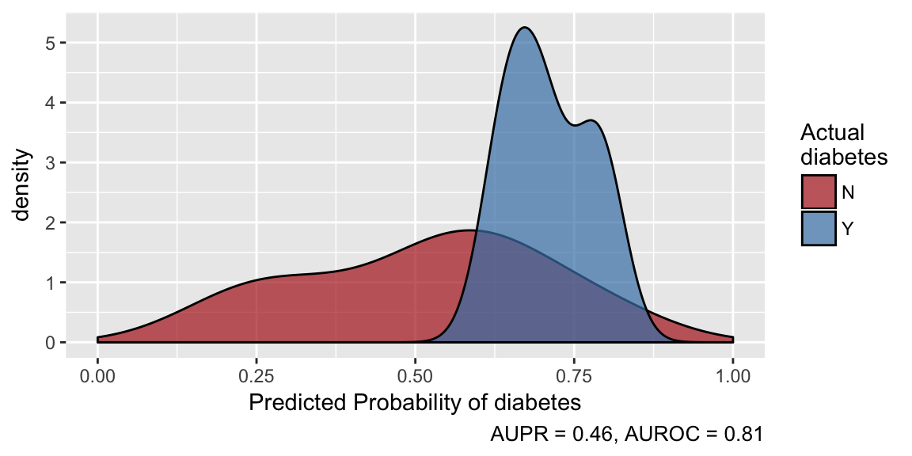

predict.model_list.RdMake predictions using the best-performing model
# S3 method for model_list predict(object, newdata, prepdata, write_log = FALSE, ...)
| object | model_list object, as from `tune_models` |
|---|---|
| newdata | data on which to make predictions. If missing, out-of-fold predictions from training will be returned If you want new predictions on training data using the final model, pass the training data to this argument, but know that you're getting over-fit predictions that very likely overestimate model performance relative to what will be achieved on new data. Should have the same structure as the input to `prep_data`,`tune_models` or `train_models`. `predict` will try to figure out if the data need to be sent through `prep_data` before making predictions; this can be overriden by setting `prepdata = FALSE`, but this should rarely be needed. |
| prepdata | Logical, this should rarely be set by the user. By default, if `newdata` hasn't been prepped, it will be prepped by `prep_data` before predictions are made. Set this to TRUE to force already-prepped data through `prep_data` again, or set to FALSE to prevent `newdata` from being sent through `prep_data`. |
| write_log | Write prediction metadata to a file? Default is FALSE. If
TRUE, will create or append a file called "prediction_log.txt" in
the current directory with metadata about predictions. If a character, is
the name of a file to create or append with prediction metadata. If you
want a unique log file each time predictions are made, use something like
|
| ... | Unused. |
A tibble data frame: newdata with an additional column for the
predictions in "predicted_TARGET" where TARGET is the name of the variable
being predicted. If classification, the new column will contain predicted
probabilities. The tibble will have child class "predicted_df" and
attribute "model_info" that contains information about the model used to
make predictions. You can call plot or evaluate on a
predicted_df. If write_log is TRUE and this function errors, a
zero-row dataframe will be returned.
Returned data will contain an attribute, "prediction_log" that contains a
tibble of logging info for writing to database. If write_log
is TRUE and predict errors, an empty dataframe with the "prediction_log"
attribute will still be returned. Extract this attribute using
attr(pred, "prediction_log").
Data will also contain a "failed" attribute to easily filter for errors
after prediction. Extract using attr(pred, "failed").
The model and hyperparameter values with the best out-of-fold performance in model training according to the selected metric is used to make predictions. Prepping data inside `predict` has the advantage of returning your predictions with the newdata in its original format.
If write_log is TRUE and an error is encountered, predict
will not stop. It will return the error message as:
- A warning in the console
- A field in the log file
- A column in the "prediction_log" attribute
- A zero-row data frame will be returned
# Tune models using only the first 40 rows to keep computation fast models <- machine_learn(pima_diabetes[1:40, ], patient_id, outcome = diabetes, tune = FALSE)#>#>#> #>#> #> #>#>#>#>#> #> #># Make prediction on the next 10 rows. This uses the best-performing model from # tuning cross validation, and it also prepares the new data in the same way as # the training data was prepared. predictions <- predict(models, newdata = pima_diabetes[41:50, ])#>predictions#> #>#> # A tibble: 10 x 11 #> diabetes predicted_diabe… patient_id pregnancies plasma_glucose diastolic_bp #> * <chr> <dbl> <int> <int> <int> <int> #> 1 N 0.656 41 3 180 64 #> 2 N 0.569 42 7 133 84 #> 3 N 0.478 43 7 106 92 #> 4 Y 0.636 44 9 171 110 #> 5 N 0.624 45 7 159 64 #> 6 Y 0.679 46 0 180 66 #> 7 N 0.597 47 1 146 56 #> 8 N 0.424 48 2 71 70 #> 9 Y 0.504 49 7 103 66 #> 10 N 0.507 50 7 105 NA #> # ... with 5 more variables: skinfold <int>, insulin <int>, weight_class <chr>, #> # pedigree <dbl>, age <int>evaluate(predictions)#> AUPR AUROC #> 0.3045635 0.7142857plot(predictions)